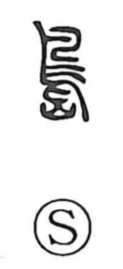

島

Kun: shima | On: tou
island
Explanation
This character is a compound of an abbreviated bird (鳥) and mountain (山). Here, 山 evokes a rocky peak jutting from the sea, and because such uninhabited rock outcrops are places where seabirds gather, the graph came to signify an island. 島 thus names the larger rocky islands, while 嶼 (sho) refers to smaller ones.